Day16 - 负责任地“扔扔扔”¶
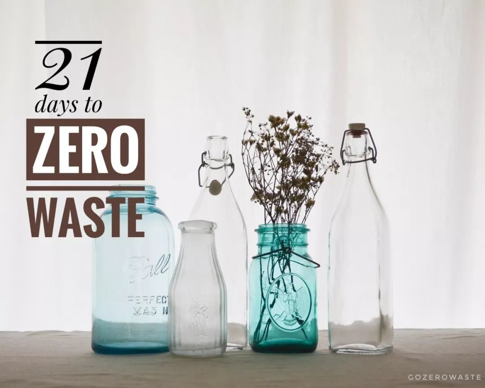最近几年，断舍离、极简主义大行其道，很多朋友不再在朋友圈晒“买买买”，转而迷上了“扔扔扔”。的确，将闲置不用的物品清出家门，实在是令人神清气爽的一大快事，只是，你想过吗，扔掉的东西到底去哪了？
以最普遍的衣服为例，我国每年产出废旧衣物约2600万吨，再利用率不足10%，绝大部分废旧衣物只能和普通垃圾一起被填埋或焚烧掉。
再来看电子产品，全世界每年产生约2500万吨电子垃圾（注：2010年数据），只有不到15%能够得到妥善回收。绝大部分电子废弃物最终的下场是被焚烧或填埋。电子产品中的毒素被直接释放到土壤、水和空气中。
There is no AWAY. 在 Zero Waster 眼里，没有什么“一扔了之”。对于不再需要的物品，该如何更负责任地进行处理呢？
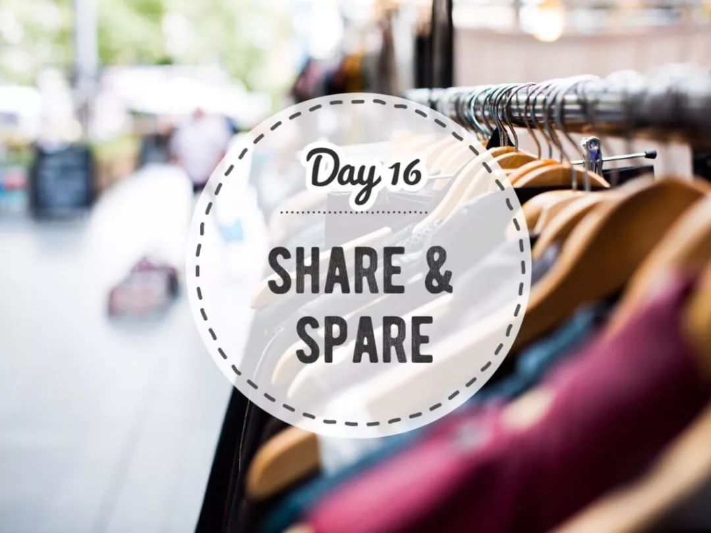二手交换、转赠¶
这是我最最最爱的处理方式了！
很多时候，物品本身并不是失去了价值，只是我们不再需要了。与其粗暴地扔到垃圾桶，不如为它找个新主人，让它在别人的厨房里、衣柜里、书架上继续发挥价值，如此物尽其用不是很美好吗？更何况，还能通过物品建立人和人的联结。
我家里就有很多有“过去”的物品，每每用到都会睹物思人，“是谁~~送你来到我身边~~~”，哼着小曲给上一手主人比心心！盘点 | 那些被我带回家的“破烂儿”们
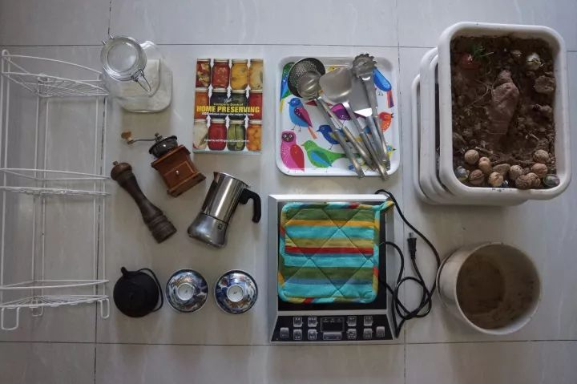这些有故事的宝贝们
如果你也想给你的物品“续命”，不妨试着：
朋友圈吆喝。拍照、发圈、面基交货，so easy!
加入闲置物品交换群。最好是同城，能减少快递。也可以自己建一个小群，把身边的朋友拉到一起，好物共享。这一点我的朋友 Lydia 做得非常好，Share & Spare 的精神也是从她那学到的。分享与给予
参加线下二手交换活动。GoZeroWaste每个月都会举办一次「旧物新生」闲置物品交换，目前已覆盖北京、上海、深圳、成都。如果你也想办交换活动，欢迎与我联系。旧物新生 | 带上旧衣服，一起来发光！
{kind=link}
回收平台¶
按物品类别可分为以下几组：
综合类¶
以下是北京地区两大综合性闲置物品回收机构，也是在众多回收箱里我比较信赖的两家。其他城市如有类似的平台，请大家留言补充。
同心互惠¶
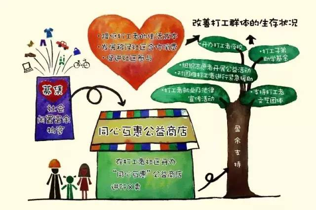{kind=link}
同心互惠由北京工友之家发起创办，接收社会闲置物资，部分通过同心互惠公益商店低价义卖，降低城市工友的生活成本；部分通过捐赠项目送到更有需要的人手中。
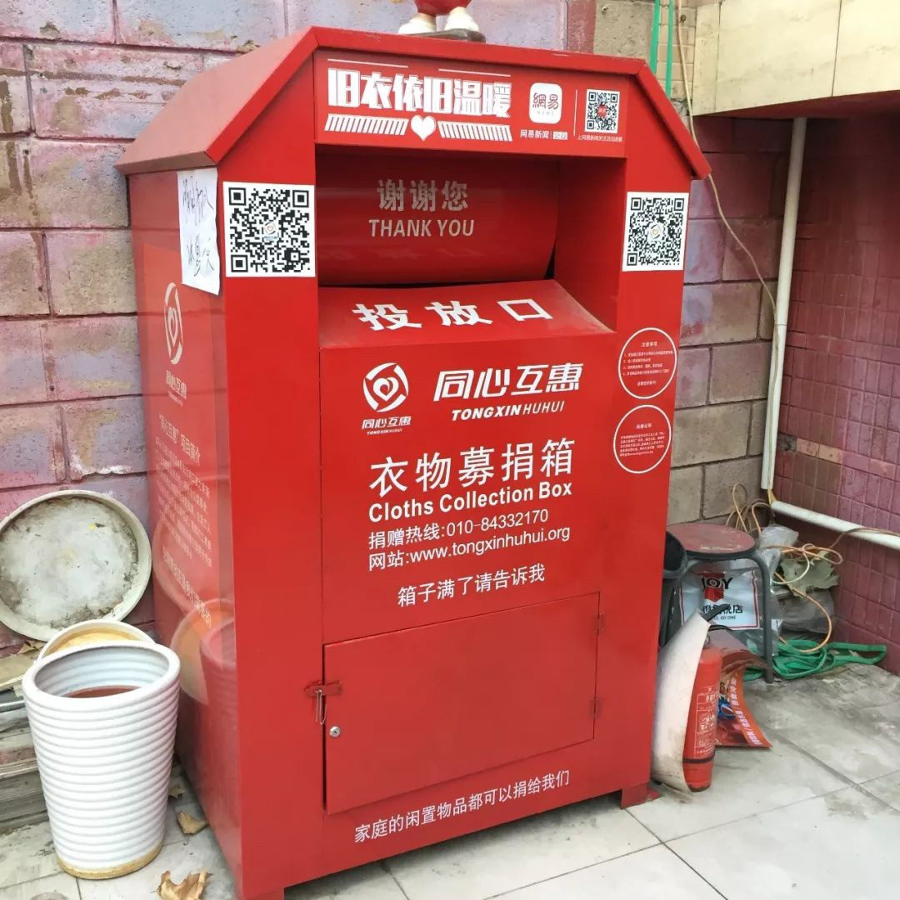{kind=link}
同心互惠在北京多个小区、学校、公司都设有回收箱，开设了多家慈善商店中，50件以上的物品可上门接收。接收物品种类：从衣服到玩具到电器，几乎什么都收。除北京外，济南、西安、成都也设有接收点。有关物品种类和注意事项请见：https://mp.weixin.qq.com/s/-zkxr89Z-NWm6fuHPgHrhQ
众爱¶
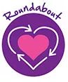众爱是一个由志愿者共同管理和经营的民间慈善组织，通过多种形式募集善款， 用于需要救助的领域。众爱创立于2008年，迄今为止已向众多慈善组织提供支持与帮助，包括北京地区的48个慈善组织以及许多中国其它地区的慈善组织。
众爱的物资接受类别也很齐全，同样可以上门取货。详见：http://www.roundaboutchina.com/zh-hans/donate/
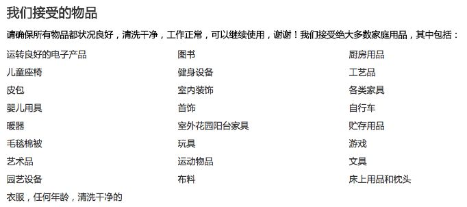此外，众爱在北京还设有两家慈善商店，下次要不要约着一起去逛逛？
众爱观唐店（北京市朝阳区香江北路甲2号 观唐广场）
云爱汇社区中心（北京市顺义区后沙峪中粮祥云小镇北区4号楼104云爱汇）
衣服类¶
每次线下的交换活动，数量最多的永远是衣服，永远处理不完的也是衣服。
京东公益¶
3月21号起，京东新一轮的旧衣回收项目又启动了。京东小哥会上门收取你的闲置衣服（每单不超过10件），并交给上面提到的同心互惠进行后续处理。
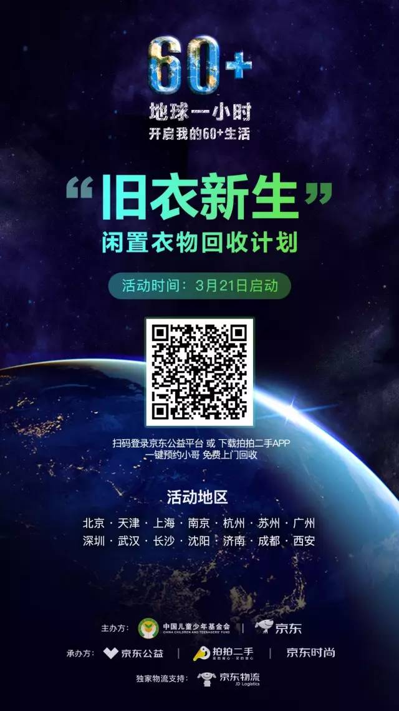{kind=link}
飞蚂蚁¶
衣服回收平台中最出名的应该是 飞蚂蚁 了吧。旧衣不要扔，全国90+城市免费上门收，环保+公益，旧衣有了新去处！
接收物品种类包括：衣服、包包、鞋子、床单、枕套、被罩、窗帘、小毛绒玩具。不过需要提醒的是：飞蚂蚁接收的衣服只有10%会进入公益捐赠渠道，大部分（75%）会被打碎做成再生材料，另外15%则通过外贸公司出口。
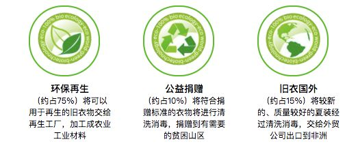图片来自飞蚂蚁官网
宝贝爱蓝天 & 发光公社¶
对于曾经陪伴过我的衣服，我还是更希望找到能够欣赏它的人，而不是被打碎做成地毯之类的。因此，我更推荐把衣服交给以下这两个平台：
宝贝爱蓝天精准捐衣
宝贝爱蓝天精准捐衣平台先从了解受助人群的精准衣物需求（包括性别、身高、季节、数量）出发，验证需求之后再通过信息平台向公众进行衣物募集。这样不仅可以实现衣物捐赠去向的全透明化，有效杜绝衣物捐赠过程中的浪费，还可以实现所需衣物直接发放到需求者个人，避免发放过程中的不公平现象。
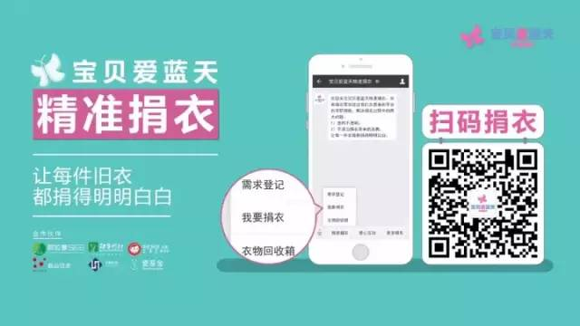发光公社
发光公社是一个女性闲置互赠与穿搭互助社区。在这里，闲置衣服直接赠送给喜欢的人，不交易、不交换。看着你曾经的心爱，被另外一个姑娘穿得漂漂亮亮的，满怀喜爱，这才是闲置衣服最大的价值。
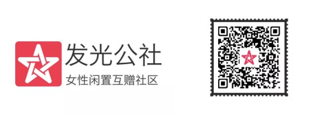书籍类¶
除了朋友之间飘流、换书，还可以通过多抓鱼和渔书批量处理闲置书籍。
多抓鱼¶
春节在老家收拾出几年前的一批书，在多抓鱼以2-5折的价格卖掉了，操作流程简单顺畅，非常推荐。今天起，解放全中国被闲置的书
渔书¶
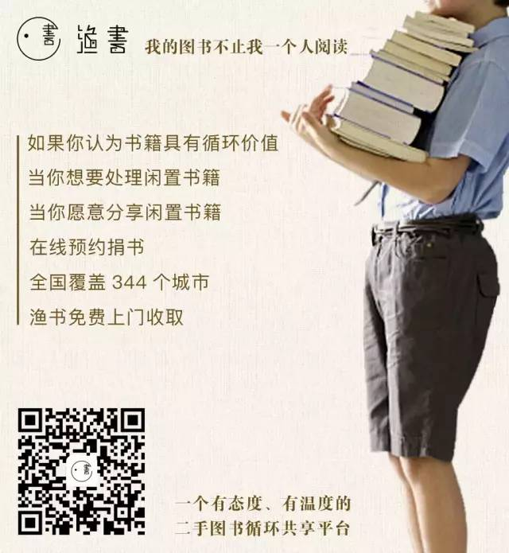{kind=link}
另外，某些城市图书馆（如深圳、厦门）也接收书籍捐赠。如果你的城市图书馆也有这样的服务，请留言告诉我！
电子产品¶
去年我们推过一篇关于电子垃圾的文章，里面分享了几种处理方式，包括：爱回收、京东回收、绿色倡议的 WE Project，详见：Story of Electronics | 那些年，我们扔掉的电子产品
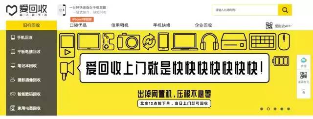 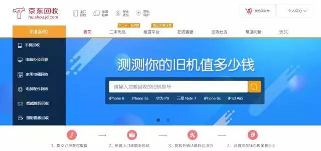 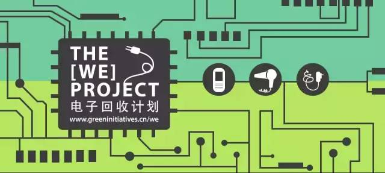另外，对于闲置物品，很多手工达人会选择通过Upcycle（升级再造）令其变身成另一件可以使用的物品，衣服改成靠枕套、牛仔裤改成包等等等等。很有创意，值得学习但请理性参考，不一定适合每个人。别费了老半天劲，最后把一件垃圾（甚至是一件原本可以给别人用的物品）改造成另一件垃圾。
分享了这么多回收渠道，我最想说的话其实是：回收不是解决办法，而是无奈之举。再怎么搭建回收平台，也抵不过源头没有节制的买买买。与其大费周章处理那些不知怎么买回家的闲置物品，不如从一开始就问问自己：我真的需要这件物品吗？

注解
本文来自公众号「GoZeroWaste」